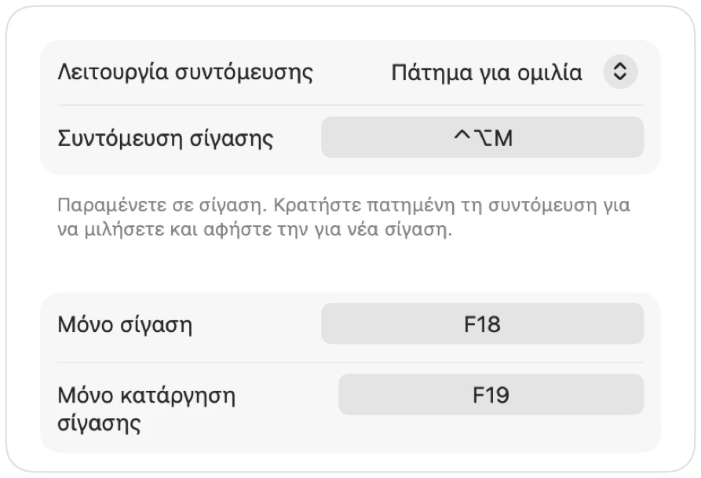

Push to talk σε Mac, σε κάθε app
Το push to talk σας κρατά σε σίγαση μέχρι να κρατήσετε πατημένο ένα πλήκτρο. Είναι ο ευκολότερος τρόπος να παραμένετε αθόρυβοι σε μεγάλες συναντήσεις ή θορυβώδη δωμάτια, ωστόσο λίγες μόνο εφαρμογές το διαθέτουν και καθεμία χρησιμοποιεί διαφορετικό πλήκτρο.
Το Muffle προσθέτει πάτημα για ομιλία σε κάθε app στο Mac σας. Επιλέξτε «Πάτημα για ομιλία» στις Ρυθμίσεις, κρατήστε πατημένη τη συντόμευση για να μιλήσετε και αφήστε την για νέα σίγαση.
Χρήση του push to talk
- 1
Εγκαταστήστε το Muffle.
- 2
Στις Ρυθμίσεις Muffle, ορίστε τη «Λειτουργία συντόμευσης» σε «Πάτημα για ομιλία».
- 3
Κρατήστε πατημένο το Control-Option-M ενώ μιλάτε.
- 4
Αφήστε το. Είστε ξανά σε σίγαση.

- Προτιμάτε ένα μεμονωμένο πλήκτρο; Ορίστε ένα πλήκτρο ομιλίας στις Ρυθμίσεις: Δεξιό ⌥, fn ή ένα επιπλέον κουμπί ποντικιού.
- Επιλέξτε μια βολική συντόμευση στις Ρυθμίσεις Muffle, για παράδειγμα ένα πλήκτρο F.
Ερωτήσεις
Λειτουργεί το push to talk στο Google Meet;
Ναι. Το Muffle θέτει σε σίγαση το ίδιο το μικρόφωνο, οπότε το push to talk λειτουργεί σε Meet, Zoom, Teams, Discord και κάθε άλλη app.
Υπάρχει λειτουργία push to mute;
Ναι. Επιλέξτε «Πάτημα για σίγαση» και κρατήστε πατημένη τη συντόμευση για στιγμιαία σίγαση.